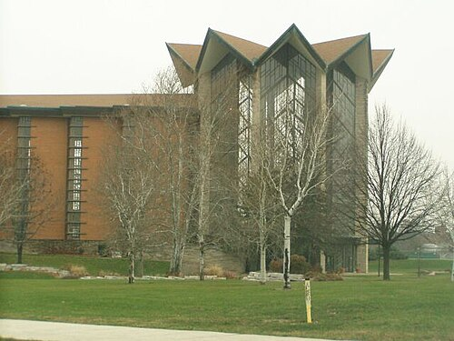

This map shows 4 of the most-searched sights in Valparaiso as photo spots, ranked by how often people search for them: Valparaiso University, Chapel of the Resurrection, Porter County Courthouse and Christopher Center lead the list. Every spot has a pin on the subject and a phone icon showing where to stand, with tips for shooting it on your phone: which lens to use, how to frame it, a settings tip and the best time of day. Directions and Navigate buttons take you to the standing point on foot or by public transport. 3 spots are free to view; the full map is for members.
The 3 free photo spots
1Valparaiso University
Valparaiso University is a Lutheran university in Valparaiso, Indiana, spread over a 350-acre campus. It began in 1859 as a small coeducational college and has been rebuilt and reshaped many times since. One landmark worth looking for is the Chapel of the Resurrection, dedicated in 1959 to replace a worship space lost to fire in 1956. It is one of the largest chapels on a US college campus, and it stands on the campus's highest point. That makes it easy to pick out from higher ground.
From the fourth floor you get an elevated view over the chapel and the wider campus, so you get buildings, lawns and trees in one frame. The university itself lies 147 m to the north-west of the balcony.
If you have time, two other spots are worth a look. The Resurrection Labyrinth gives the chapel's exterior with the labyrinth in the foreground. The Student Bridge is a footbridge with student names and initials carved into its metal. Keep your phone steady against the rail or your body for sharp shots, and wipe the lens before you start.
Where it is: The university campus is in the city of Valparaiso, Indiana.
Shooting it on your phone
Lens: Start with the default lens (1x) for the whole campus view. Switch to telephoto (2x-5x, depending on your phone) to pick out the chapel. Try ultra-wide (0.5x) only if you want a lot of sky and ground in the frame.
Where to stand: Stand at Christopher Center Library balcony (fourth floor balcony, reached by stairs or elevator from inside the library). An elevated view over the chapel and the wider campus. It is reached by stairs or the elevator from inside the library.
Framing: Turn on gridlines and place the chapel on one of the upper crossing points, with trees and lawns filling the lower part of the frame. Keep the phone level so the buildings do not lean. Then take one wider shot of the whole campus. For a ground-level alternative, try the Resurrection Labyrinth for the chapel with the labyrinth in front, or the Student Bridge for its carved names.
Settings tip: Tap on the chapel to set focus, then slide the exposure down a little if the sky is bright so the sky keeps its detail. If you shoot through glass or a rail, hold the phone close to it and avoid reflections.
Best time: The balcony is open only while the sun is up and the weather permits, so go in daylight and check the weather before you climb up.
2Chapel of the Resurrection

The Chapel of the Resurrection is the centrepiece of the Valparaiso University campus in Indiana, and it is a Northwest Indiana landmark, clearly visible from U.S. Route 30 and across the surrounding community. It stands on the highest ground on campus, so it works as a landmark in wider campus shots. Work began in 1956 and the chapel was dedicated in 1959. The chancel is circular and about 30 m high, and the apse roof is shaped like a nine-pointed star, which gives you an unusual outline to look for. Inside, the stained glass windows are about 29 m tall, designed by Peter Dohmen. The Brandt Campanile, a 44 m bell tower, stands to the south-west of the chapel. A circular prayer labyrinth was added on the east side in 2005. It makes a good foreground for a shot of the chapel's outside walls. For a different view, the balcony of the Christopher Center Library gives a raised look at the chapel with the campus laid out around it. That helps if you want to show how the building sits among the other university buildings. If you would rather get close, the labyrinth gives a low, open foreground. Inside, the tall windows reward a few minutes of looking, but this is a working chapel, so be quick and discreet if a service or rehearsal is under way.
Where it is: The chapel is on the campus of Valparaiso University in the city of Valparaiso, Indiana, on the highest ground on the campus. The library balcony view is on the East Quad side, across from the University Center for the Arts.
Shooting it on your phone
Lens: Start with the default lens (1x) from the balcony to show the chapel with the campus around it. Try 2x or 3x if your phone has it to pick out the star-shaped roof and tower. Use the ultra-wide (0.5x) at the labyrinth or inside the chapel to fit in the tall windows.
Where to stand: Stand at Christopher Center Library balcony (balcony, off the East Quad). A raised, bird's-eye view of the chapel within the surrounding campus. The chapel is to the north-east, and from the balcony you get a raised, bird's-eye view of it within the surrounding campus. If you want the chapel's outside walls with the labyrinth in front, walk over to the Resurrection Labyrinth as an alternative.
Framing: Switch on the gridlines and put the chapel on one of the vertical lines, leaving the campus buildings and paths in the lower part of the frame to show the layout. Keep the phone level so the tall walls do not lean. At the labyrinth, crouch slightly so the paths lead the eye towards the chapel.
Settings tip: Tap the chapel to focus, then slide the exposure down a little if the sky is bright, so the stonework keeps its detail. Inside, tap on the windows and lower the exposure so the colours stay rich. Use night mode if the interior is dim, and hold the phone steady against a rail or wall.
Best time: The balcony is open only while the sun is up and the weather allows, so plan a daytime visit. For the interior, avoid service times, when photography may be limited.
4Christopher Center
The Christopher Center is the library on the campus of Valparaiso University, in Valparaiso, Indiana. It opened as the university's fourth library and replaced the older Moellering Library, which was demolished in 2005. The building has about 105,000 square feet (9,800 m2) of space and was designed by the Chicago firm Esherick Homsey Dodge & Davis, who wanted to break the mould of the traditional institutional library. A grid-like structure along the south and east sides gives the outside its distinctive look and also works as a sunscreen.
The viewpoint is the fourth-floor balcony inside the Christopher Center. The phone icon on the map is the balcony itself, not the middle of the building. From up there you look out over the Chapel and the wider campus, not back at the library's own walls. That makes it a good place for a 'view from the library' picture that shows the building in its campus setting. A student guide to the campus lists the balcony as a favourite photo spot because of the raised view. If you want a picture of the library's outside, this is not the place for it.
Keep the shot simple. Line up the Chapel with the gridlines on, and keep the horizon level. Take a few frames at different zoom levels so you have options to choose from afterwards. Check the campus map for current access before you go.
Where it is: The Christopher Center stands on the campus of Valparaiso University in Valparaiso, Indiana, close to the university Chapel. Its reading room overlooks Resurrection Meadow, south of the Chapel.
Shooting it on your phone
Lens: Start with the ultra-wide (0.5x) to take in the sweep of the campus. Then switch to the default lens (1x) for a more natural view. Use the telephoto (2x-5x, depending on your phone) to pick out the Chapel from the rest of the view.
Where to stand: Stand right at the subject: the phone icon on the map marks the spot. Stand on the fourth-floor balcony inside the Christopher Center. Find the library first and then head up to the fourth floor. From the balcony the photo shows the Chapel and the campus laid out below, not the library's outer walls. It works best as a context shot.
Framing: Turn on the gridlines and place the Chapel on one of the lines. Keep the horizon level. If you want a wider view, take one frame at 0.5x and another at 1x. Choose the better one afterwards.
Settings tip: Tap the Chapel to set focus, then slide the exposure down a touch if the sky looks washed out. Hold the phone with both hands against your body to keep it steady.
Best time: Go in daylight so the campus view is well lit.
1 more spots for members
These spots are on the map as grey numbered pins. Where to stand, the phone tips, photos and directions for them come with Explorer membership.
- 3Porter County Courthouse · members
Get every spot with Explorer membership
Explorer opens every spot on every map in the library: where to stand, how to frame it on your phone and how to get there, plus the Xdatrys Maps app with maps saved on your phone for use without signal. $9.99 a month or $59.99 a year; cancel any time.
Join Explorer Compare free and Explorer
Not ready to join?
Get Pocket Lens, our free daily smartphone travel photography newsletter.
Free, and you can unsubscribe at any time. If the form does not show, sign up on our newsletter page.
Questions
What are the top photo spots in Valparaiso?
The first three on this map are Valparaiso University, Chapel of the Resurrection and Porter County Courthouse. They are ranked by how often people search for them. The full map has 4.
Where should I stand to photograph Valparaiso University?
Stand at Christopher Center Library balcony (fourth floor balcony, reached by stairs or elevator from inside the library). Start with the default lens (1x) for the whole campus view.
When is the best time to photograph the Chapel of the Resurrection?
The balcony is open only while the sun is up and the weather allows, so plan a daytime visit. For the interior, avoid service times, when photography may be limited.
How do I get to the Christopher Center?
No public transport stops are listed for this spot, so head to the Valparaiso University campus in Valparaiso, Indiana.
Credits
Map data © OpenStreetMap contributors (ODbL); base map built with Protomaps from OpenStreetMap data. Photos from Wikimedia Commons, credited under each photo with their licence. Background reading for the free spots: Valparaiso University, Chapel of the Resurrection (Valparaiso, Indiana), Christopher Center (Wikipedia, CC BY-SA). Access rules and opening times change: check before you go.